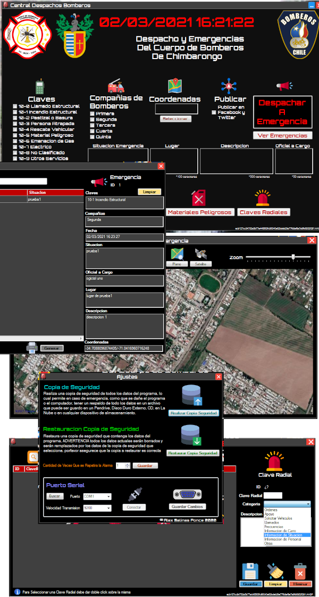
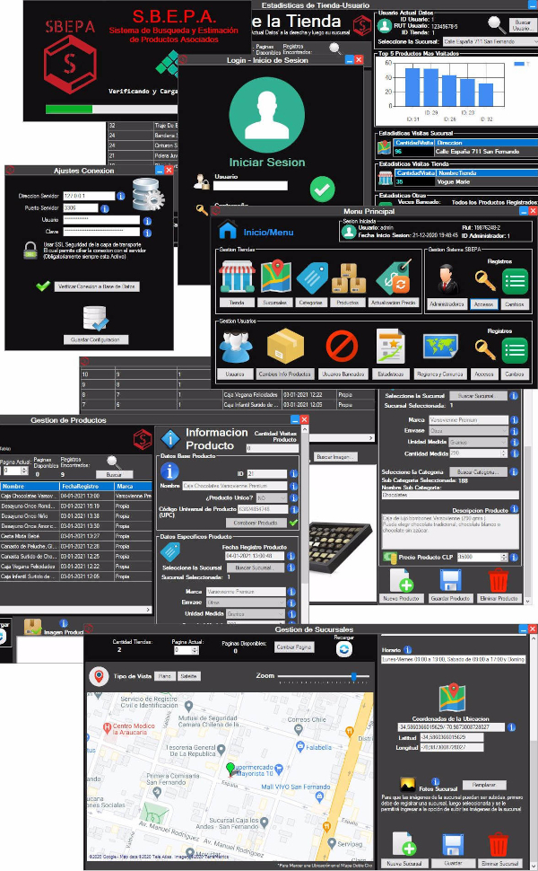

Desarrollo de Programas para Windows o Linux, Aplicaciones para medianas o pequeñas empresa, desde programas simples para llevar el registro de artículos hasta sistemas para gestionar los procesos internos, Programas realizados con
lenguaje C#, Vb.net o Java, con Base de datos SQLite, MySQl, MariaBD o SqlServer, diseñado según las preferencias del usuario
Desarrollo de Páginas Web Responsivas para uso personal, pymes o empresas, diseñadas según el los gustos del cliente, desde páginas para mostrar información util y de contacto, hasta páginas para de ventas de productos de un negocio, cuentas de correo personalizadas, certificado SSL, CMS Wordpress - Joomla - Prestashop, Hospedajes de Calidad y Rapidez para el mejor posicionamiento
Análisis e Implementación de herramientas de Seguridad Informática, Destrucción Segura de Datos Privados mediante estándares internacionales, Auditoria de Sistemas Informáticos y Redes, Detección de Vulnerabilidades, Puesta en Marcha
de Sistemas Activos y Pasivos de Seguridad, Encriptación de Datos Sensibles con Seguridad Militar, Mejoras de Seguridad
Instalación de Sistemas Operativos Windows y Distribuciones Linux, Controladores (Drivers), Programas y Juegos, Mantención y Optimización de Equipos Computacionales, Limpieza de Hardware y Optimización de Sistemas Operativos, Desinfección
de Equipos Infectados, Recuperación de Datos Borrados, Solución a Errores Computacionales
Diseño y Armado de red inalámbrica y/o cableada, Instalación y Configuración de Router, Access Point, Extensores de Red WiFi, Switches, Tarjetas de Red internas o USB, Instalación de Cámaras de Seguridad IP, Instalación y configuración
de Servidores NAS e Multifuncionales en Red Interna, Diseño y Modelado de Red
Accesoria para la compra de Equipos de Escritorio, Notebook, Tabletas, Teléfonos, cambio de componentes y mejoras a sistemas, adquisición de programas. Servicio de armado de computadores por componentes según el uso o necesidades del
Cliente y su Presupuesto, para que pueda tener el mejor dispositivo para satisfacer sus necesidades
Soporte a dispositivos Android, lo cual incluye restablecimiento de dispositivo a su estado original, Instalación de la ROM original de dispositivo o una alternativa (flasheo), Instalación y configuración de aplicaciones avanzadas,
Rooteo del sistema, Limpieza del sistema y desinfección de virus para una mayor Velocidad y Estabilidad del sistema
Borrado de Aplicaciones molestas y archivos innecesarios, Optimización del encendido del sistema, Reorganización de los sectores de almacenamiento, Mantenimiento físico del dispositivo, Desactivación de procesos automáticos innecesarios, Limpieza del registro del sistema, para acelerar la velocidad de carga y respuesta de su PC al máximo
• Gestión de Base de Datos MySQL, SQLserver, Oracle y SQLite
• Instalación y Configuración de Aplicaciones
• Desinfección de Malware y Virus
• Mantenimiento Preventivo de PC
• Diagnóstico
de Problemas Computacionales
• Copias de Seguridad de Datos

Administración Emergencias
Terminado Curso de Microsoft de Administrativo Computacional para dominar Windows, Suit Ofimática Microsoft Office, potenciado con la mención Armado y Mantención de Computadoras, brindando un excelente soporte técnico
Técnico capaz de realizar el ciclo de desarrollo de software, incorporando en ello el análisis de requerimientos, diseño, construcción, pruebas e implementación de soluciones. Su formación lo habilita para diseñar y construir sistemas conforme a estándares de calidad técnica y a los requerimientos del cliente
Técnico capaz de analizar sistemas funcionales, supervisarlos, brindar mejoras, desarrollar soluciones informáticas seguras, modelar y graficar procesos de negocios, controlar la calidad del software, administrar proyectos informáticos, diseño de sistemas

Profesional capacitado para realizar y soluciones integrales en desarrollo de sistemas, incorporando el análisis, metodologías, pruebas e implementación de soluciones seguras, su formación lo habilita para evaluar y
gestionar proyectos informáticos, habilidades de seguridad informática y soluciones basadas en el internet de las cosas

Sistema Informático para la Administración de Emergencias de Bomberos
Sistema Computacional de Aplicación de Escritorio más Base de Datos local, encargado de Registrar y Organizar los registros de las emergencias de bomberos, sus sistemas de claves, sus diferentes compañías de bomberos, las Coordenadas por GPS de la emergencia, Publicar las emergencias en las redes sociales de Twitter y Facebook para notificar a la comunidad, y despachar automáticamente las señales radiales a las antenas para notificar a las unidades, almacenar la situación de emergencia, el lugar, la descripción de la misma, el oficial a cargo de la emergencia. Y un sistema de gestión de los voluntarios de bomberos, la guía telefónica de los números de contacto de apoyo en emergencias, la ubicación de los Grifos (GPS), la guía de materiales peligrosos y las claves radiales, y un sistema sencillo para hacer copias de seguridad de todos los datos registrados y su restauración en caso de emergencia, la capacidad de llevar los datos a PDF para ser impresos

Imagen de Dispositivo de Control de Transmision de Emergencias

Click aqui o en la imagen para acceder al proyecto en gitHub
Sistema de Búsqueda de Productos Asociados
Sistema WEB multiplataforma (Pagina Web Responsiva y Escritorio) para ayudar a sus visitantes a buscar productos y locales cercanos de firma sencilla, y a los dueños de locales pequeños brindarles la capacidad de tener presencia en internet sin tener que hacer un gran gasto de capital. La principal característica de este sistema es la facilidad de acceso y control de la información de los productos gracias a un sistema de búsqueda simplificada web y gestión de escritorio para los dueños de pymes, resolviendo así necesidades de los clientes de buscar productos en la zona que se encuentre, escatimarlos y filtrarlos según sus preferencias, y ayudando a los dueños de pequeños locales a la difusión de sus productos y emprendimientos, el sistema puede manejar tiendas, sucursales, productos, categorías de productos, administradores, accesos, cambios, usuarios, cambios de productos, usuarios baneados, estadísticas, regiones y comunas, coordenadas por GPS, almacenar la información en PDF para ser impresa, copias de seguridad de los datos y capacidad para restaurarlo
Click aqui o en la imagen para acceder al proyecto en gitHub